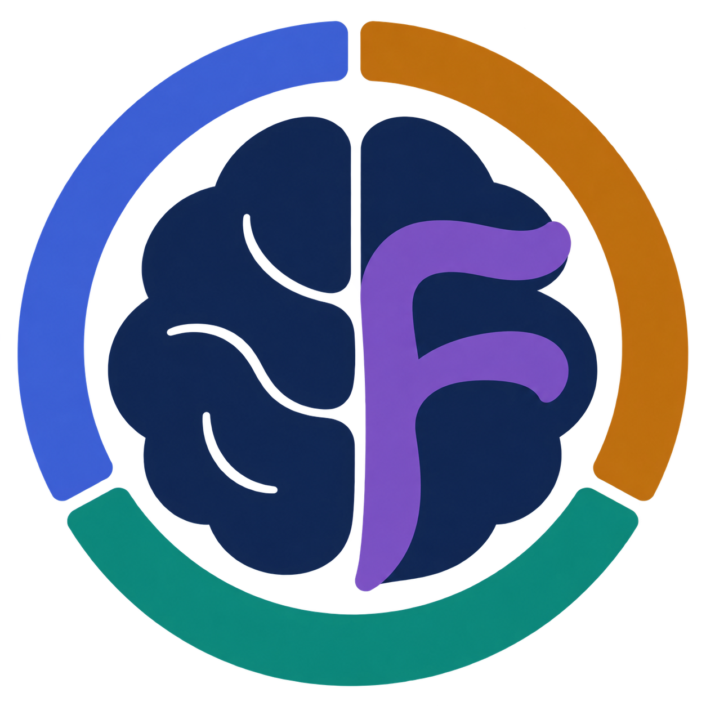

Bridge resolutions
ARNESS projects signals with heterogeneous spatial, temporal, and spectral resolutions into 128 shared latent tokens. This compact representation lets the backbone process diverse inputs and integrate paired modalities.

Brain-OF Paper & resourcesAn OmniFunctional Foundation Model
for fMRI, EEG and MEG
Joint pretraining across modalities. Single- or paired-modality downstream inputs.
Each modality measures a different aspect of brain activity. Together, they broaden both what the model can learn and the data it can learn from.
fMRI provides spatially precise measures of hemodynamic activity, whereas EEG and MEG resolve electrophysiological dynamics at high temporal resolution. Pretraining on a single modality limits access to this complementary information and to the collective scale of available brain recordings.
Brain-OF brings these heterogeneous datasets into a shared pretraining framework, combining spatial, temporal, and spectral diversity to learn transferable representations for unimodal and multimodal brain decoding.
The pretraining corpus brings together resting-state and task recordings from 37 public datasets across international sites. It spans multicultural and multiracial populations, healthy participants and clinical cohorts, and diverse acquisition systems and experimental paradigms.
Bar lengths use a logarithmic scale; exact sample counts are shown.
The corpus includes 14 EEG, 23 fMRI, and 5 MEG entries. Multimodal cohorts appear under each relevant modality. Channel counts range from 17 to 64 for EEG and 248 to 306 for MEG; fMRI uses 116 or 246 ROIs. Acquisition sampling rates and repetition times below are those reported in the original acquisition, before preprocessing.
| Dataset | Modality | Paradigm | SR / TR | Channels / ROIs | Participants | Samples |
|---|
Brain recordings differ in physical origin, sensor configurations or brain parcellations, and spatial, temporal, and frequency resolution. Brain-OF addresses resolution discrepancies, semantic heterogeneity, and neural-signal structure through three complementary components.
ARNESS projects signals with heterogeneous spatial, temporal, and spectral resolutions into 128 shared latent tokens. This compact representation lets the backbone process diverse inputs and integrate paired modalities.
Sparse MoE combines shared experts for modality-invariant structure with routed experts for modality-specific semantics. DINT attention suppresses irrelevant context while integrating local and global dependencies.
Masked Temporal-Frequency Modeling (MTFM) jointly reconstructs signals and their Fourier-domain components, encouraging representations that capture complementary temporal and spectral structure.
MTFM couples signal reconstruction with Fourier-domain reconstruction during self-supervised pretraining. The examples below examine the resulting temporal dynamics, EEG spectral structure, fMRI functional connectivity, and MEG sensor topography.
EEG & MEG: FFT along time, within each channel.
fMRI: FFT across the ordered ROIs, at each time point.
Mask components in the transformed representation, then apply the inverse FFT to return the corrupted signal to its original layout.
Mask segments of the corrupted signal and flatten the matrix into a channel/ROI–patch sequence for the model.
Restore the decoder output to the original signal layout to recover the masked temporal segments and corresponding Fourier-domain components.
The loss combines reconstruction errors in the temporal and Fourier domains. The weight α balances their contributions.
Both terms use Smooth L1 loss.
Compare the original and reconstructed EEG waveform and spectrogram. These qualitative examples show how temporal and spectral structure are represented together.
Brain-OF Huge · Qualitative reconstructionsEmotion recognition, seizure and abnormality detection, clinical classification, and age prediction. Explore all nine unimodal settings from the main comparison.
Mean ± standard deviation over five seeds. Brain-OF uses full finetuning. “Best baseline” is selected from the 12 reported baselines for this setting.
| Method | Mean ± SD |
|---|
LoRA freezes the pretrained backbone and learns low-rank update matrices. Brain-OF Base uses rank 32 and a scaling factor of 64, with approximately 2% of the total parameters trainable.
| Dataset | Modality | Metric | Full finetuning | LoRA |
|---|---|---|---|---|
| SEED-V | EEG | Cohen’s κ (%) ↑ | 23.98 ± 0.29 | 21.81 ± 0.13 |
| TUAB | EEG | BAC (%) ↑ | 81.88 ± 0.17 | 81.30 ± 0.04 |
| ADNI | fMRI | BAC (%) ↑ | 68.23 ± 2.07 | 68.44 ± 2.13 |
| ADHD-200 | fMRI | BAC (%) ↑ | 62.57 ± 1.19 | 62.10 ± 1.04 |
| CamCAN | MEG | MAE (years) ↓ | 8.99 ± 0.14 | 9.17 ± 0.44 |
| LEMON | fMRI | BAC (%) ↑ | 58.95 ± 2.13 | 59.36 ± 3.02 |
LoRA has slightly higher mean scores on ADNI and LEMON-fMRI. Full finetuning performs better on the other four settings, with the largest difference on SEED-V.
Linear probing evaluates pretrained representation quality by freezing the entire backbone and training only a linear prediction head. The comparisons below also include full finetuning of pretrained models and full training of the same architecture from random initialization.
| Dataset | Modality | Metric | Full finetuning | Linear probing | From scratch |
|---|---|---|---|---|---|
| TUAB | EEG | BAC (%) ↑ | 81.88 ± 0.17 | 79.14 ± 0.24 | 77.59 ± 0.27 |
| ADNI | fMRI | BAC (%) ↑ | 68.23 ± 2.07 | 65.22 ± 1.47 | 63.39 ± 2.36 |
| CamCAN | MEG | MAE (years) ↓ | 8.99 ± 0.14 | 10.92 ± 0.22 | 9.69 ± 1.07 |
| Dataset | Modality | Metric | Full finetuning | Linear probing | From scratch |
|---|---|---|---|---|---|
| TUAB | EEG | BAC (%) ↑ | 82.87 ± 0.18 | 81.92 ± 0.21 | 80.82 ± 0.18 |
| ADNI | fMRI | BAC (%) ↑ | 71.79 ± 2.19 | 70.76 ± 1.22 | 64.85 ± 1.03 |
| CamCAN | MEG | MAE (years) ↓ | 7.87 ± 0.22 | 9.02 ± 0.11 | 8.59 ± 0.94 |
Frozen pretrained features outperform training from scratch on TUAB and ADNI, while CamCAN age prediction benefits more from adapting the backbone.
DINT attention shows stronger noise robustness than vanilla attention in this stress test, retaining higher balanced accuracy as noise increases.
PCA highlights class-related separation in TUAB (EEG) and ADNI (fMRI), and continuous age-related structure in CamCAN (MEG), comparing raw inputs with finetuned Base, Large, and Huge embeddings.
First-component associations with the target strengthen from Base to Huge across these datasets. On TUAB, Base’s first component explains 73.0% of the embedding variance.
| Dataset | Modality | Model | Pearson r | Spearman ρ | AUC |
|---|---|---|---|---|---|
| TUAB | EEG | Base | 0.701 | 0.678 | 0.892 |
| TUAB | EEG | Large | 0.707 | 0.687 | 0.898 |
| TUAB | EEG | Huge | 0.723 | 0.700 | 0.905 |
| ADNI | fMRI | Base | 0.380 | 0.388 | 0.724 |
| ADNI | fMRI | Large | 0.478 | 0.438 | 0.753 |
| ADNI | fMRI | Huge | 0.484 | 0.496 | 0.786 |
| CamCAN | MEG | Base | 0.746 | 0.735 | — |
| CamCAN | MEG | Large | 0.784 | 0.762 | — |
| CamCAN | MEG | Huge | 0.805 | 0.772 | — |
AUC uses the first principal component alone for classification. It is not applicable to the continuous age target in CamCAN.
Serial ARNESS resampling combines paired modalities in the same latent representation, without an extra modality-specific fusion branch.
How much does pretraining on each modality improve downstream prediction? Modality Shapley values quantify each modality’s average marginal contribution to downstream performance across combinations of pretraining modalities. Separately, occlusion analysis masks individual channels or ROIs to identify which signals most influence prediction performance.
On TUAB, the normalized modality Shapley values are 0.41 for MEG, 0.37 for fMRI, and 0.22 for EEG.
Brain-OF spans compact and billion-parameter variants. Increasing model capacity expands the space for shared and specialized representations, while sparse routing keeps only a subset of parameters active for each token.
If you find Brain-OF useful in your research, please consider citing our work: